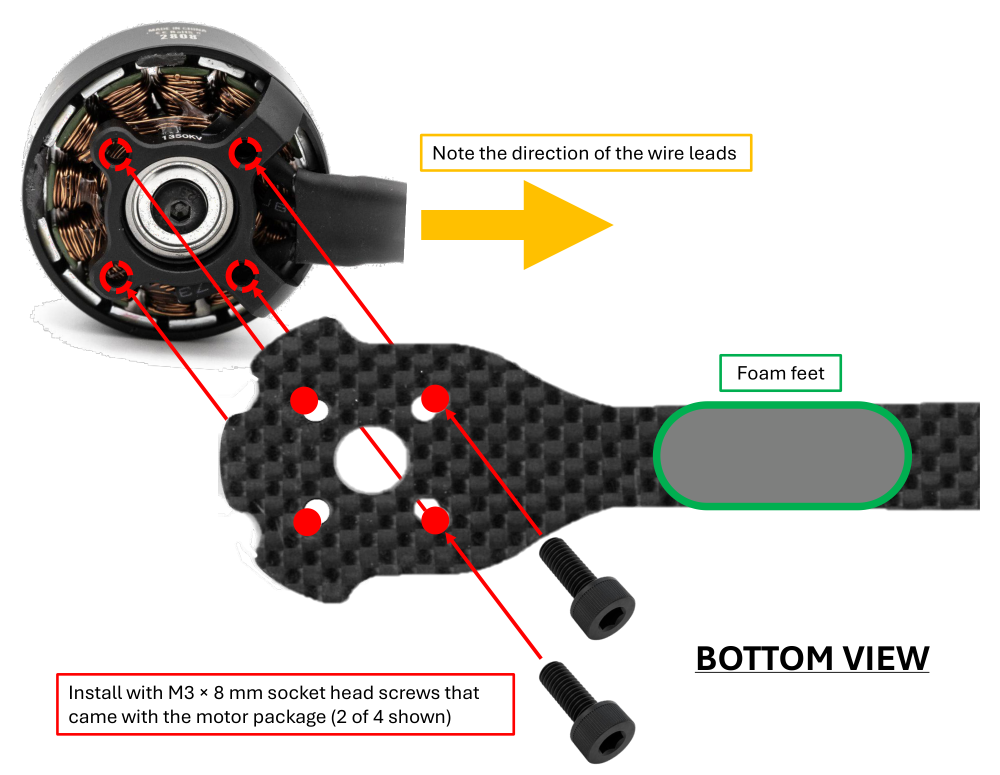

Task 5: Install motors
Install all four motors with the short motor screws and retain the prop-shaft nuts.
Parts required
- Lower frame from Task 4
- Four motor packages
- One motor per package
- One M5 nylon-insert lock nut per package
- Four M3 × 8 mm socket-head screws per package
- Four M3 × 10 mm socket-head screws per package (surrender to instructor)
Tools required
- 2.5 mm Allen key
Step 1. Open one motor package and sort the hardware
- Retrieve four motor packages from the supplies shelf.
- Open one package and locate the three accessory bags: one M5 nylon-insert lock nut, four M3 × 8 mm socket-head screws, and four M3 × 10 mm socket-head screws.
- Install the M5 nylon-insert lock nut on the propeller shaft by hand. This is for accountability only, not final installation.
- Stop tightening once the nut is no longer free-spinning.
- Surrender the longer M3 × 10 mm screws to your instructor.

Motor package accessories.
Step 2. Install the motor with the short screws
- Place the motor on the tip of an arm and align the mounting holes.
- Make sure the motor power cables run along the arm, not off to the side.
- Hand-start all four M3 × 8 mm screws by hand before using the 2.5 mm Allen key on any one screw.
- Snug the screws with the 2.5 mm Allen key in a crisscross pattern.
- Do not overtighten.
- Repeat for the other three motors.

Fig. 5a. Install the motor with the M3 × 8 mm socket-head screws.
Common errors
- Using the longer M3 × 10 mm screws for motor mounting.
- Fully tightening one screw before the other three screws are started.
- Letting the motor leads point off to the side instead of along the arm.
- Losing the M5 propeller-shaft nuts.